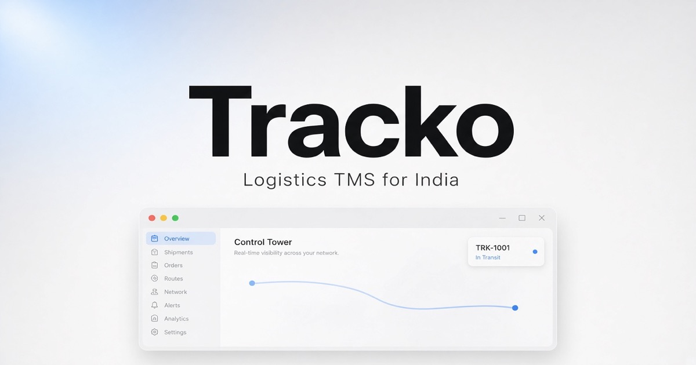
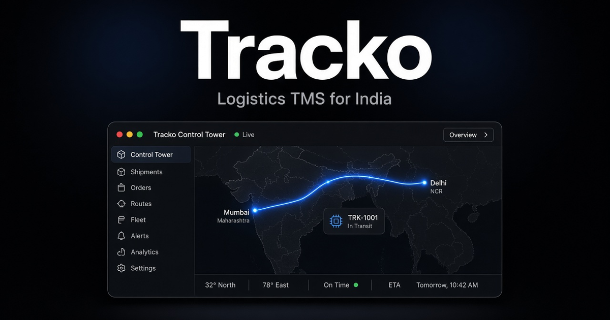

Control tower
Live lanes, exceptions, and settlement in a single ops surface — clean enough for a boardroom, sharp enough for a dock.
Mac · Windows
Freight, finally clear.
One control tower for India’s road logistics — GST, e-Way, SIM, FASTag, RFQ. Install in a single line.
macOS Apple Silicon · no public .exe


Built private. Shared as an install — never as source.
Muse-style install — copy the line for your OS. The script fetches the binary. No Setup.exe on this page.
curl -fsSL https://zyvorai.github.io/tracko-install/install.sh | bash
macOS Apple Silicon. Installs to /Applications and launches.
Everything your ops stack juggles — in one record.
Live lanes, exceptions, and settlement in a single ops surface — clean enough for a boardroom, sharp enough for a dock.
GST splits, e-Way Part-B, SIM + FASTag + GPS, Tally export. Built for how freight actually moves here.
SSE fleet positions, alerts, and dispatch — map that moves while you watch.
Same product. Different doors in.
Mac + Windows
Full control tower. One-command install on either OS.
Recommended
Desktop + portal + phone Scanner / Driver against your private API hub.
Your LAN / VPS
Postgres SoT, JWT, Muse install page. Source stays closed.
Fifteen minutes. Tell us what broke.
http://127.0.0.1:8080 · or your LAN hub